Chapter 10 · Part 1 — After Lunch
Jack opened his eyes. His heart was still racing. Hyena laughter still rang in his ears.
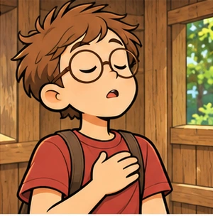
“We made it,” said Annie.
“Yes,” said Jack. “But it was very close.”
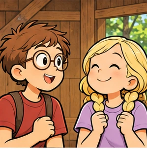
Jack took another moment to calm down. Then he pulled the Africa book out of his pack and put it with the other books.
Annie put the scroll with the other two scrolls.
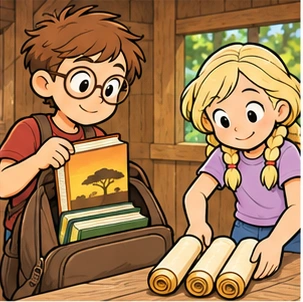
“The giraffe was the true honey on that trip,” she said, “sweet and golden, with danger all around it.”
“Yep,” Jack said. “And now we have just one riddle to go.”
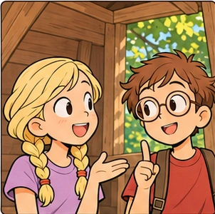
“Yep,” said Annie. “Ready?”
“Ready.”
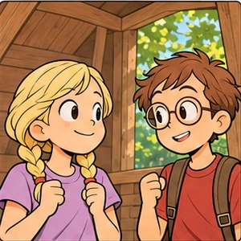
She started down the ladder. Jack followed. When they hit the ground, they walked through the sunlit woods.
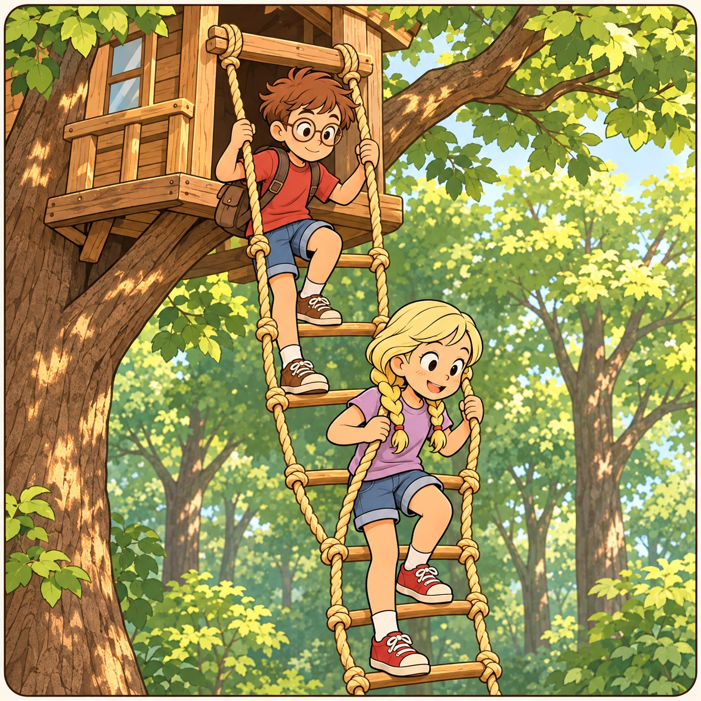
“It’s time for lunch,” said Jack.
“I’m full from our picnic,” said Annie.
“Same here,” said Jack.
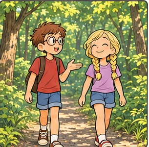
“What do we tell Mom?” said Annie.
“We say we ate our sandwiches coming back from the store,” said Jack.
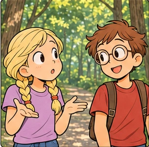
“What if she asks why?” said Annie.
“Oh … just say we had a picnic with a Masai warrior in Africa,” said Jack.
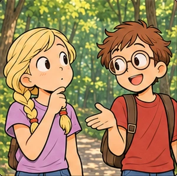
Annie laughed. “Right,” she said, “because we didn’t want him to be mad at us for taking his honey.”
“Right,” said Jack, “the honey from a beehive that a honey guide led us to.”
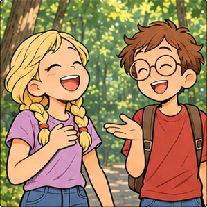
“Right,” said Annie, “and that happened after an elephant gave me a shower. And we scared off two hyenas.”
“Right,” said Jack, “and after you fell into a mudhole because you were helping a million wildebeests migrate across a river.”
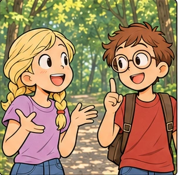
“Right,” said Annie. “And all that was before a giraffe saved us from a lion.”
“Right,” said Jack.
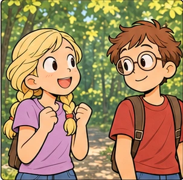
Jack and Annie left the Frog Creek woods and started up their sunny street.
They were silent for a moment.
Then Jack pushed his glasses into place. “We better just say we ate our sandwiches on the way home from the store,” he said.
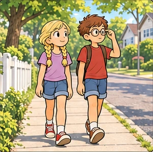
“Right,” said Annie.
“And if Mom asks why—” started Jack.
“We’ll just say it’s a really long story,” said Annie.
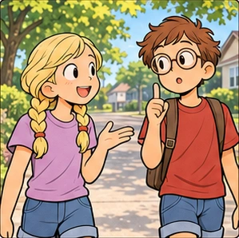
“Right,” said Jack, “with, like—ten chapters.”
Annie laughed. “Good plan,” she said.
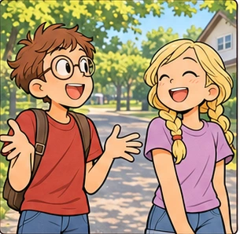
“Very good plan,” said Jack.
They crossed their yard. They went up their steps and through their front door.
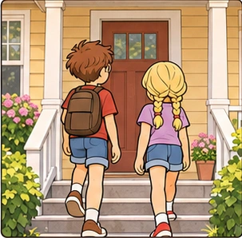
“We’re back!” Annie shouted.
“Great!” called their mom. “Ready for lunch?”
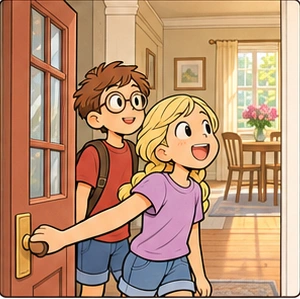